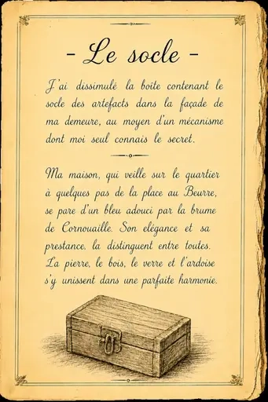
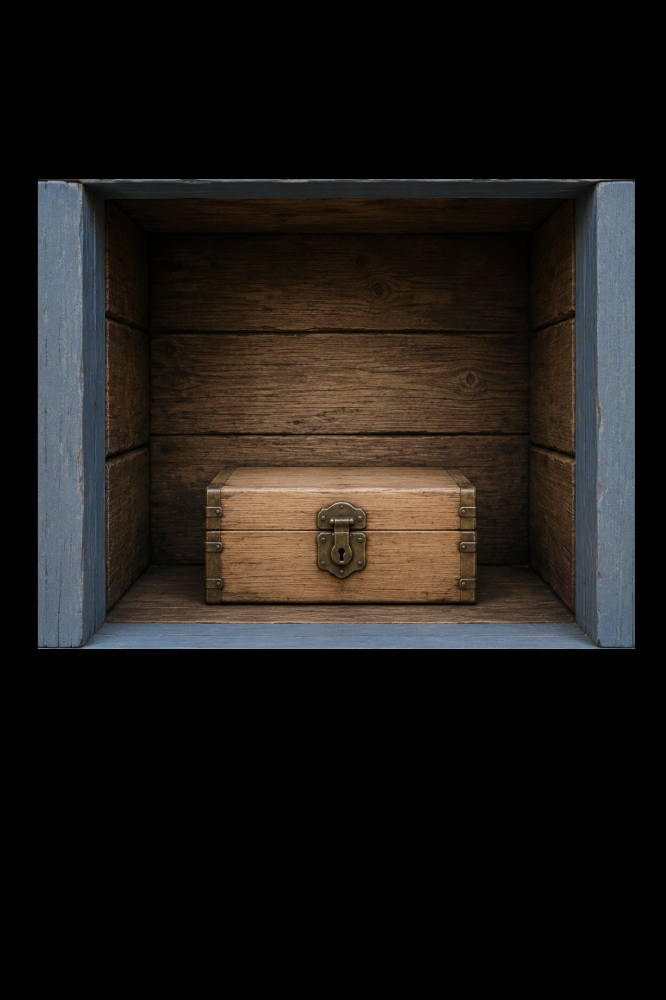
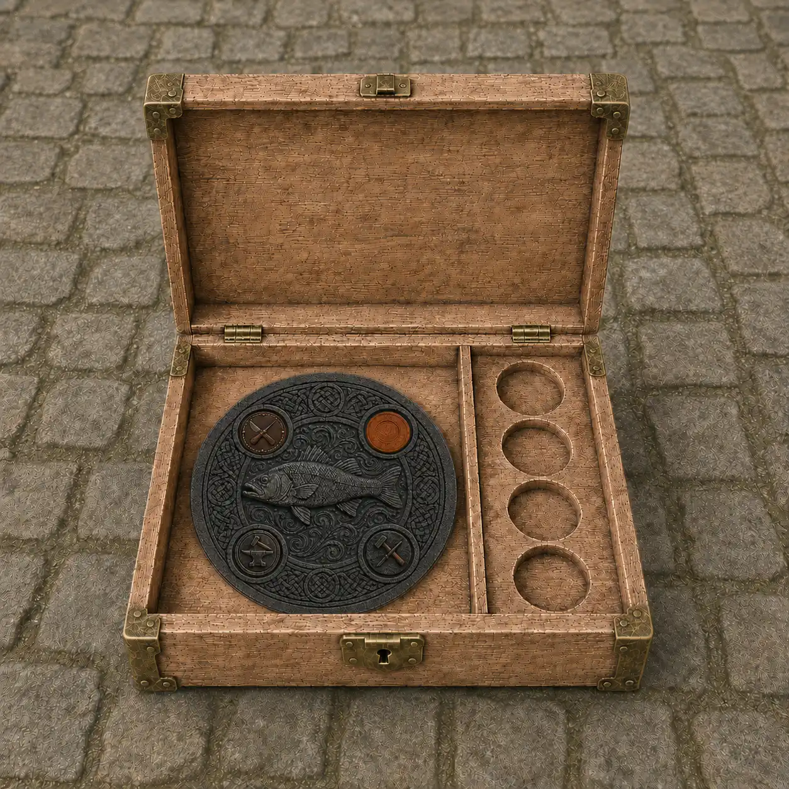
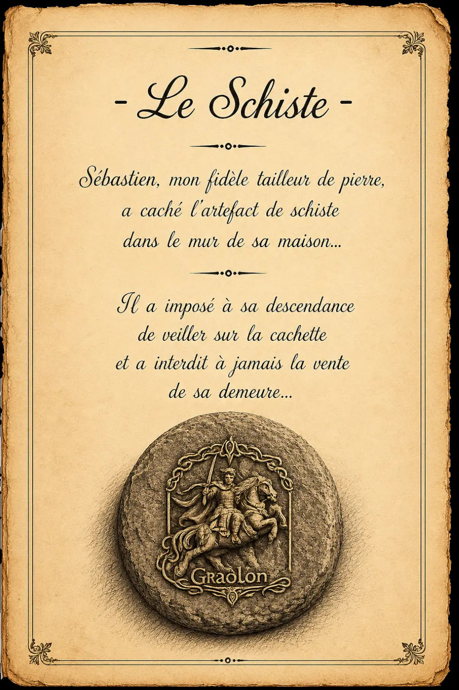

Le secret du roi Gradlon
Un carnet a recemment été découvert dans les archives de Quimper. Il évoque des artefacts cachés dans la ville.
Saurez-vous les découvrir?
quel secret cachent-ils?
Rendez-vous à l'angle de la rue du Roi Gradlon et de la rue Kéréon pour commencer l'aventure.
Cathédrale de Quimper
Degemer mat en enklask
« Sekred ar Roue Gradlon »
Bienvenue dans l'enquête
« Le secret du Roi Gradlon »

En quelle année a été replacée la statue du roi Gradlon ?
Indice
Observez bien les alentour

Le socle
Le socle et sa boîte ont été dissimulés par le contremaître dans la facade d'une demeure au moyen d'un mécanisme secret
La bâtissse se trouve à quelques pas de la Place au beurre
"Elle se pare d'un bleu adouci par la brume de cornouaille."
"La pierre, le bois, le verre et l'ardoise s'y unissent dans une parfaite harmonie"
Avez-vous trouvé la bâtisse évoquée?
Combien de croix de Saint André voyez-vous sur le bâtiment?
"Ces croix, sont également appelés contreventements et sont destinés à rigidifier les murs"
Indice



le socle est bien là, mais les artefacts sont absents.
Consultons la suite du carnet de M Le Gall pour les retrouver.

Le schiste
Sébastien, le tailleur de pierres a également caché un artefact dans un des mûrs de sa maison.
La bâtissse (la plus ancienne du Finistère) se trouve dans une toute petite ruelle
Quels sont les objets présents sur le panneau précisant que la maison est la plus ancienne du Finistère ?
Sélectionnez deux réponses.

Artefact de métal
Le forgeron qui a été désigné pour cacher l'artefact de métal a indiqué :
"Il faudra ignorer la Sainte Vierge et son enfant mais repérer les initiales de mes amis ouvriers"
Le prochain artefact
L'artefact de métal rejoint le coffret. D'autres artefacts restent à découvrir.
L'artefact de cuir a été confié au tanneur installé le long de l'Odet.
Quel est le nom de la passerelle de l'Ancienne Tannerie ?
Indice
Et si vous vous promeniez sur le pont de Sainte Catherine?
M. Le Gall nous indique dans son carnet que la dernière pièce, l'artefact d'argile, est dissimulée près de la cathédrale, sur la façade de l'échoppe d'un célèbre faïencier de Quimper.
Quel est son nom ?
Indice
Son échoppe se trouve dans un renfoncement de la place où s'élève la cathédrale.
La suite de l'enquête reste à écrire.